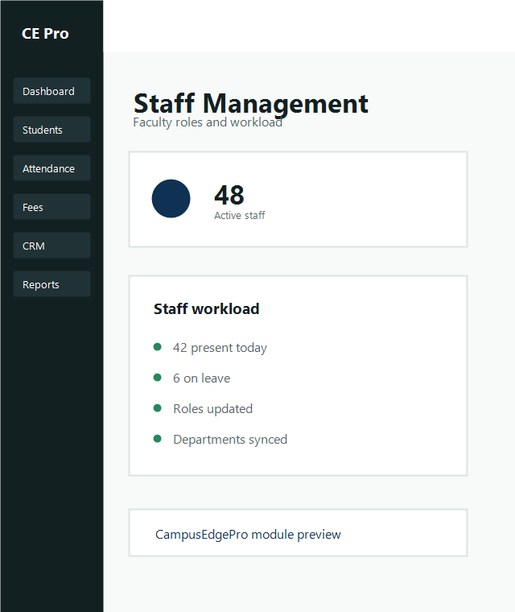
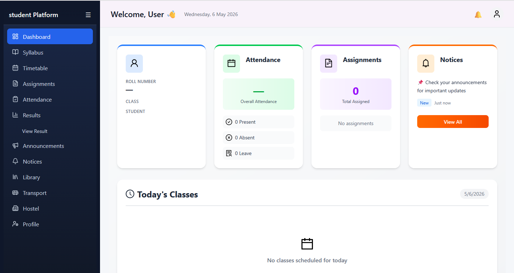
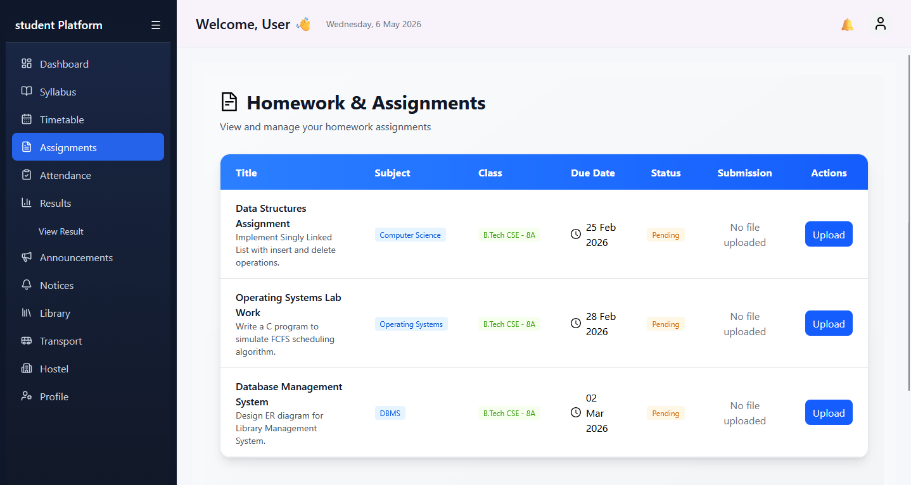
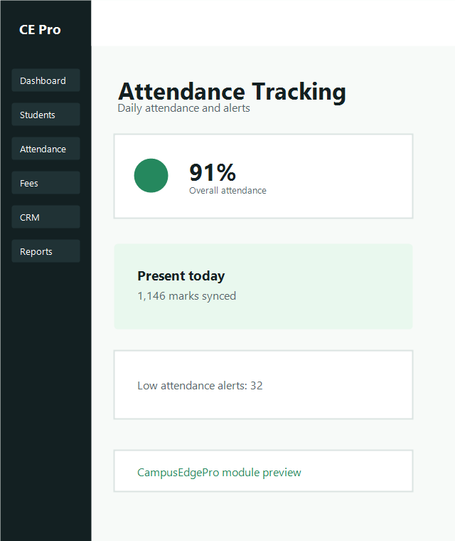
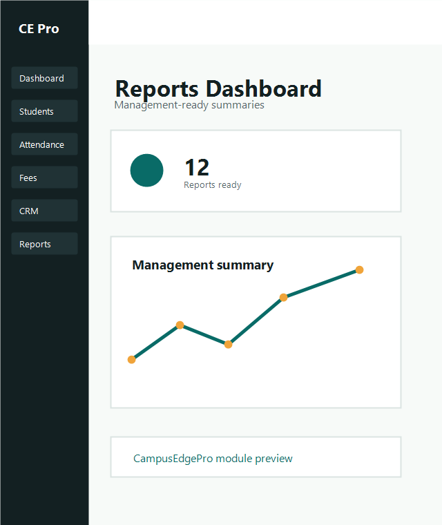

Profiles
Keep faculty and staff records complete with designation, department, contact details and joining history.
Staff module
Manage faculty, non-teaching staff, departments and permissions from one organized workspace built for college operations.

Keep faculty and staff records complete with designation, department, contact details and joining history.

Assign responsibilities, user access and academic duties with role-based controls across the ERP.

Track teaching load, departmental assignments, attendance and team performance in one view.
Store employee records, qualifications, departments and employment information with consistency.

Monitor staff presence, leave entries, workload availability and department-level summaries.

Review department staffing, performance and workload reports for management planning.